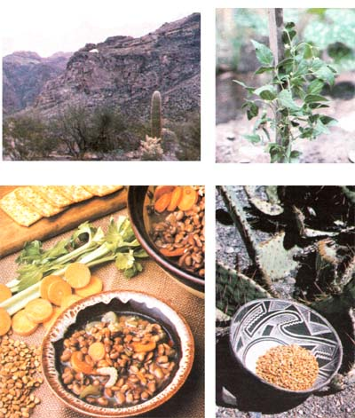

With the summer sun baking your garden soil, you might want to try cultivating . . .
Most modern gardeners have likely never heard of the tepary bean. [EDITOR'S NOTE: Indeed, even a search through MOM's seldom stumped editorial reference library couldn't provide much information on the legume.] The truth is, however, that this little-known plant-Phaseolus acutifolius--is among North America's oldest agricultural crops: The naturally heat-, drought-, and pest-resistant bean has been identified in strata that are at least 8,000 years old! It served as a staple food for generations of prehistoric native Americans, and-by 1701-was the principal crop raised at the mission Nuestra Senora de los Dolores in New Mexico. In fact, it was there that (according to one legend) the bean got the name by which we know it today . . . because, when the arriving Spanish asked a group of Papagos what they were planting, the Indians responded, "T pawi, " meaning simply, "It's a bean."
However, while the original residents of the Southwest have long taken advantage of the tepary's hardiness (the Papagos and Pimas, among other tribes, still raise the bean), it enjoyed little respect from the Spanish-who believed it to be a degenerate version of their own favored legume, P. vulgaris-and is all but unknown to today's commercial and backyard growers. There are a number of good reasons to change this policy of neglect. For one, the tepary has produced yields of up to 700 pounds per acre without irrigation . . . whereas most conventional dry beans won't even survive in arid areas without supplemental watering. (And when both crops are irrigated, the t pawi's yields can equal or exceed the national average of 1,400 pounds per acre for the more popular legumes.) With water shortages and summer rationings occurring all too often over the past few years, the tepary could prove to be an excellent choice for many southwestern gardeners . . . and perhaps for folks in other regions, as well.
Phaseolus a cutifolius is traditionally a two season bean, with the first planting being made in early spring and another in midsummer. (The Pimas sowed their teparies when the mesquite bushes leafed out and again when the saguaro was harvested.) The seeds some sources are listed at the end of this article-should be planted two inches deep, eyes down, and two to three inches apart . . . with each row one and one half to two feet from its neighbor. (Folks who plant by the moon generally agree that the second lunar quarter is the prime bean sowing time.)
It's best to cultivate your tepary patch regularly, to keep down weed competition, at least until the blooms appear. Note, too, that these are pole beans, which will require some sort of support (a wire or string fence would be a good choice). And, though teparies will grow under very arid conditions, they'll generally produce better-as noted above-when watered. The legumes have a reputation for adaptability, however, so, to find the optimum amount for your location, you might want to vary the waterings given to different clusters of plants in your first crop and note the results.
If you're in the mood for experimentation, you could try to duplicate the early native Americans' method of cultivation. Using a digging stick, such farmers would sow three to five seeds, three inches deep, in hills spaced six to eight feet apart. The Papagos often planted their teparies at the mouths of arroyos, waiting till after those gullies had been flooded with the early summer rains. These areas are usually moister than the open desert, and they're also rich in the nutrients and trace minerals washed down by the seasonal torrents.
Regardless of which growing method you choose, though, you should know that teparies aren't eaten green. Let them dry on the vine, and harvest the small kernels when they're orange brown. Papago women traditionally shelled the beans by beating the pods with sticks. The harvesters would then parch the kernels over live coals to destroy any insect eggs that might be present. (You can accomplish the same thing by simply placing the beans, on a shallow baking pan, in a 180° oven for 15 minutes . . . or by freezing them for at least an hour.)
Of course, no plant will find much favor among gardeners uriless its productivity is matched-or exceeded-by its popularity at the dinner table. And the tepary performs well on both counts. Its flavor is sweet and delicate, and the legume lends itself well to almost any recipe in which more common beans are specified.
Before cooking, let your teparies soak in cold water for at least 12 hours. After that time, the beans will have swollen to about twice their dried size, and will be ready to be incorporated into your favorite dishes. (They may, however, require more cooking time than do some other bean varieties.) The following recipes have always received an enthusiastic reception around my house. I hope they'll provide you with a worthwhile "beginner's course" in tepary cuisine.
Boil some soaked beans-the amount will depend upon the number of servings desired until they're quite soft, then mash them into a paste. Flavor the dish, to taste, with your favorite seasonings . . . minced garlic, diced chiles, sauted onions, cilantro (fresh green coriander, also known as Chinese parsley), cumin, oregano, and salt are commonly used. Finally, fry the teparies in vegetable oil or lard until they're very hot and have lost most of their moisture . .. then serve them, as a complete meal, with tortillas, cheese, and hot sauce. A serving of refried beans can also be used as a side dish to accompany other main course Mexican recipes.
1 large onion 2 cloves of garlic 1/2 pound of salt pork crushed red pepper (to taste) 3 quarts of water 6 cups of dried beans, soaked overnight and drained 1 cup of chopped celery 1 cup of grated carrots salt and pepper
First, chop the onion and mince or press the garlic cloves .... then combine them with the salt pork, a judicious amount of red pepper, and the 3 quarts of water. Bring the mix to a boil and let it simmer for an hour (or until the meat is tender). Now, remove the pork, dice it, and return it to the stock, along with the soaked teparies. After another 2 to 3 hours of gentle boiling, the beans should be tender. At that point you can toss in your celery and carrots, and when the soup has cooked slowly for 30 minutes more-add salt and pepper to taste . . . and serve the hearty meal. The recipe should feed a dozen people!
This meal is simplicity itself. To prepare it, just add cubes of wild or domestic meat to a pot of soaked teparies (still in their water), and boil the stew until the meat and beans are tender. We like to season the dish with coriander, salt, and chili powder . . . and occasionally add corn kernels or diced squash early in the cooking process-to create a thicker stew.
I know of only two sources of tepary (also referred to as tepari) seeds. They can be or dered--for 80d per packet (about 200 seeds), plus $1.00 shipping and handling-from Plants of the Southwest, Dept. TMEN, 1570 Pacheco Street, Santa Fe, New Mexico 87501 . . . or, at 802 (postpaid) for a similar sized packet, from Redwood City Seed Company, Dept. TMEN, P.O. Box 361, Redwood City, California 94046.
Summer's heat is coming into full swing, and thirsty gardens are demanding more and more water. But with shortages occurring throughout the country-and perhaps rationing measures being taken in your own community-chances are you're beginning to feel just a bit guilty about the amount of the precious liquid your plot requires. Now would be a good time to put in your own experimental tepary patch ... and watch those beans grow high, even when the soil is dry.
|
 CLOCKWISE FROM LEFT: Once the yearly flash floods bring water and trace minerals to the mouths of arroyos such as the one pictured here, Papago gardeners plant tepary seeds in the enriched earth .... The tepary bean's plant doesn't seem to differ much-in appearance, at least from those of our more common legumes . . . . The traditional crop displayed in a beautiful Native American basket .... And here's a ""modern"" bowl of hearty and delicious tepary bean soup. |
|
|